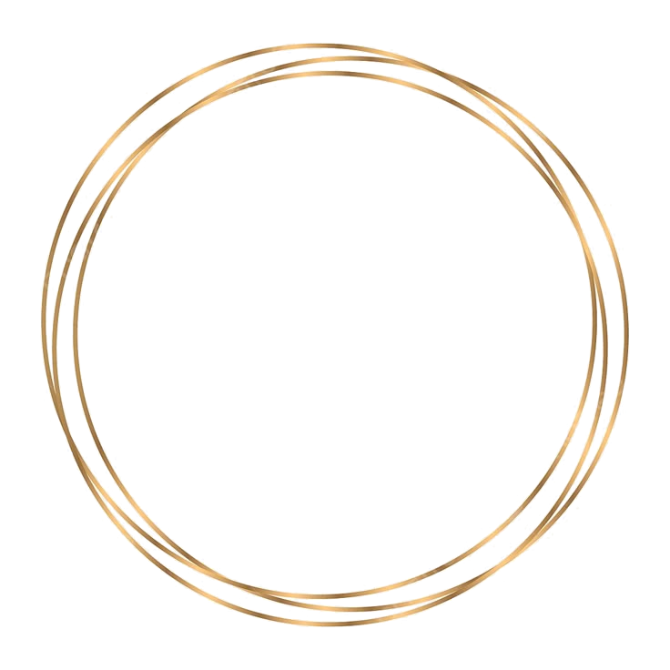
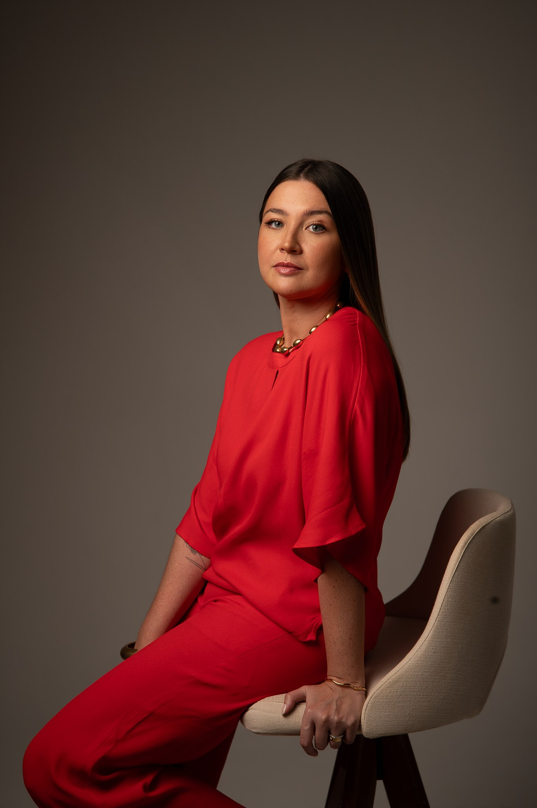
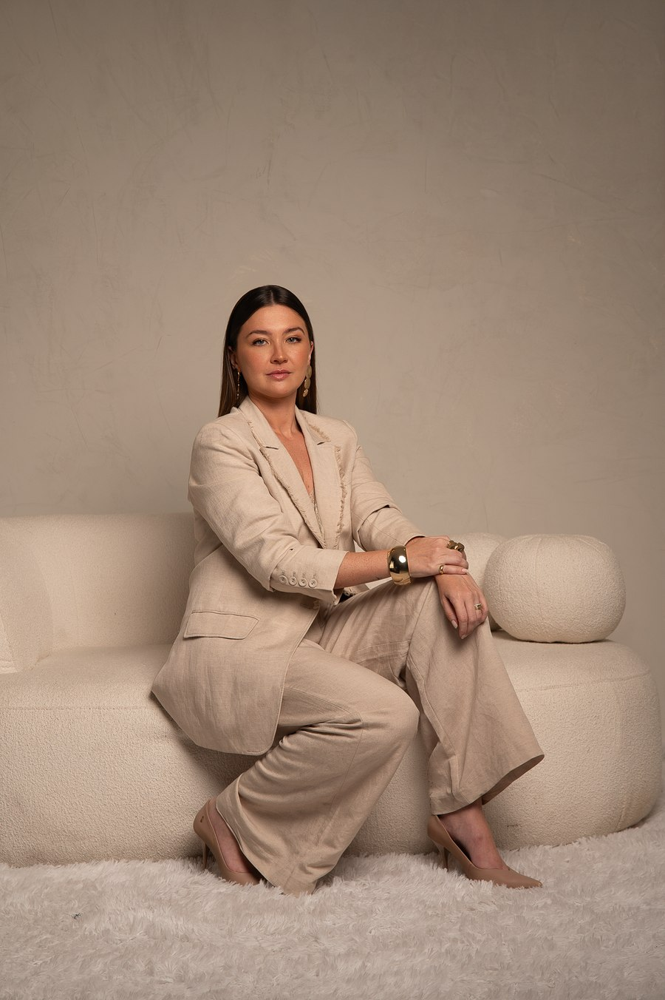
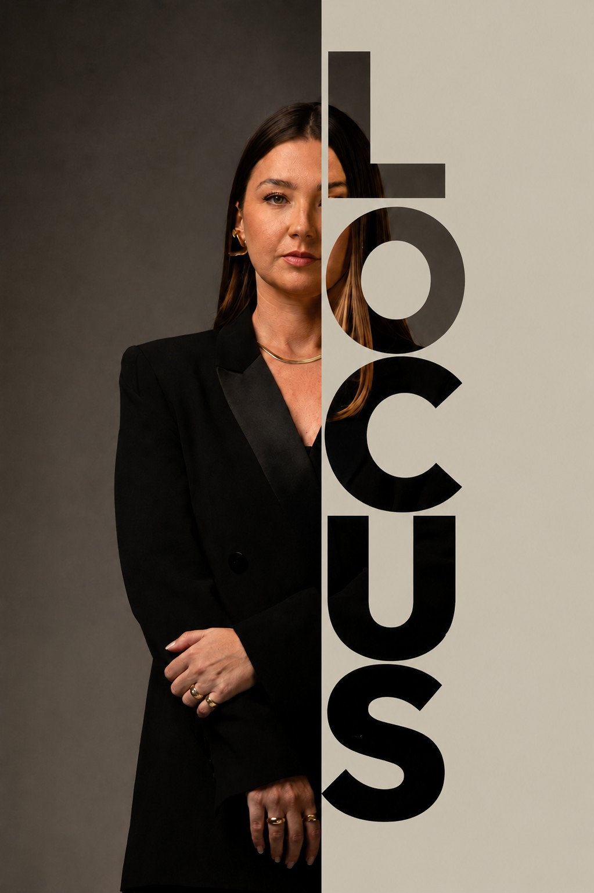

Aprenda o Método Locus e desenvolva uma comunicação clara, consistente e ética, construindo uma presença profissional que represente a advogada que você já se tornou.

A interpretar a lei.
A construir estratégias.
A conduzir atendimentos.
A assumir responsabilidades.
A resolver problemas complexos.
Como produzir conteúdo.
Como se posicionar.
Como transmitir confiança.
Como construir uma presença profissional.
E talvez tenha percebido que publicar conteúdo é muito diferente de comunicar a própria advocacia!
As pessoas criam impressões sobre sua experiência, sua especialidade, a qualidade do seu trabalho, mesmo antes de falar com você. A questão não é se você será percebida. A questão é se essa percepção representa, de fato, a profissional que você é. É por isso que construir uma presença profissional deixou de ser apenas uma questão de comunicação. É uma questão de coerência.

O Método Locus nasce de uma ideia simples: a sua rotina profissional já possui tudo o que você precisa para construir uma comunicação relevante. O problema é que ninguém ensinou você a enxergar isso.
Ao longo do Curso Locus, você aprenderá um método para identificar oportunidades de comunicação dentro da sua própria advocacia e transformá-las em uma presença profissional consistente.
Sem personagens. Sem fórmulas prontas.
Sem depender de tendências.
Você aprenderá a comunicar a profissional que já é.
Compreenda como deseja ser percebida e organize sua comunicação com intenção.
Aprenda a identificar oportunidades de conteúdo na sua rotina profissional.
Transforme suas experiências em conteúdos relevantes, respeitando a ética da advocacia.
Construa uma presença profissional que continue fazendo sentido ao longo da sua carreira.
Entenda por que tantas advogadas competentes não conseguem comunicar o próprio valor.
Descubra como transformar sua rotina em fonte permanente de comunicação.
Uma metodologia prática para produzir conteúdos claros e alinhados à sua atuação.
Uma comunicação sustentável, capaz de acompanhar a evolução da sua carreira.
Descubra se o Curso Locus faz sentido para o momento da sua advocacia.


Pagamento à vista ou parcelado conforme disponibilidade da plataforma.
Não. Todas as aulas são gravadas para que você possa assistir no seu ritmo durante o período de acesso.
Não. O curso foi desenvolvido justamente para quem deseja estruturar sua comunicação desde o início ou reorganizar aquilo que já faz.
O foco do Curso Locus é ensinar você a comunicar sua advocacia de forma clara, consistente e ética, sempre respeitando os limites da profissão.
Sim. Durante o período de acesso, você poderá enviar suas dúvidas pela plataforma.
A sua advocacia já ocupa
um lugar na sua vida
Investimento: R$ 297,00